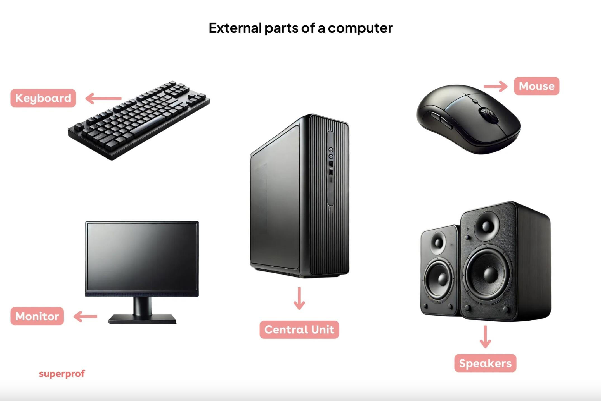
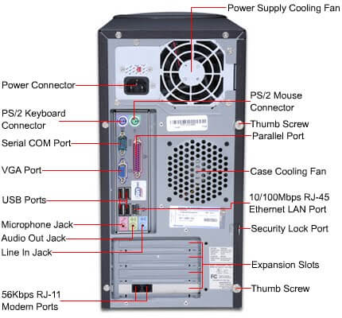

External computer parts

The tower labeled “Central Unit” is the system unit. The CPU is the processor inside it.
COMPUTER SYSTEMS SERVICING
A photo challenge for future computer technicians.
Look closely, say your answer, and choose the correct name.

WELCOME, STUDENT
Your five-minute study time is saved under your name.
Identify the main computer part shown in the photo.
Choose one correct answer.
QUIZ COMPLETE
REVIEW BEFORE YOU PLAY
These labeled diagrams are study guides. Quiz answers appear only after choosing.

The tower labeled “Central Unit” is the system unit. The CPU is the processor inside it.

This is an older computer. Modern rear panels may have different ports.
INDIVIDUAL ORAL PRESENTATION
Students who completed the quiz join automatically. One turn each, in a random order.
Loading quiz participants...
Repeat quiz attempts count as one student name. The presentation order stays saved on this computer.